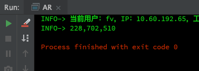
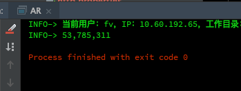
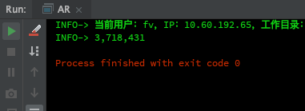
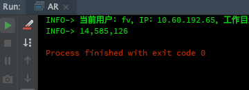

本文题目来自于知识星球，后台回复“知识星球”可参与问答。
书接上回，继续说说这个生成唯一订单号的方法，这次来讲讲性能问题。
先贴原始代码：
/**
* 生产唯一的交易订单号
*
* @return
*/
public static String createUniqueOrderNo() {
SimpleDateFormat nyrsfm = new SimpleDateFormat("yyyyMMddHHmmss");
return nyrsfm.format(new Date()) + getRandomLengthCode(4);
}
/**
* 获取随机的短信验证码
*
* @return
*/
public static String getRandomLengthCode(int length) {
return String.valueOf((int) ((Math.random() * 9 + 1) * Math.pow(10, length - 1)));
}首先来看第一个方法，第一眼看过去，发现一个问题：该类是一个工具类，方法都是静态的。在第一个方法中，SimpleDateFormat对象每次调用的时候都会创建，而且是一样的对象，这里既浪费内存又浪费CPU，总体来讲浪费时间。
修改如下：
static SimpleDateFormat nyrsfm = new SimpleDateFormat("yyyyMMddHHmmss");
/**
* 生产唯一的交易订单号
*
* @return
*/
public static String createUniqueOrderNo() {
return nyrsfm.format(new Date()) + getRandomLengthCode(4);
}测试代码如下：
public static void main(String[] args) {
List<String> list = new ArrayList<>();
long nanoMark = getNanoMark();
range(10000).forEach(x ->
{
createUniqueOrderNo();
});
output(getFormatNumber(getNanoMark() - nanoMark));
}这是测试结果：


可以很明显看出来，修改过之后的方法的确快了很多。
下面再研究一下获取时间的方法，暂时也没找到太好的办法，暂且忽略了。下面看看第二个方法，获取随机四位数的，首先对于int转成string还有一种方法就是直接使用+连接，下面是测试代码：
public static void main(String[] args) {
List<String> list = new ArrayList<>();
long nanoMark = getNanoMark();
range(100000).forEach(x ->
{
// String ss = String.valueOf(1211);
String ss = 1121 + "";
});
output(getFormatNumber(getNanoMark() - nanoMark));
}这是测试结果：


差别并不是很大，查阅资料显示用+连接的会多创建对象，占用更多内容资源。所以使用valueof()方法也许会更合适一些。经过一些尝试，发现第二个方法没啥可以优化的。性能方面的暂且如此吧。